The Grid Inspector allows you to examine CSS Grid Layouts using the Firefox DevTools, discovering grids present on a page, examining and modifying them, debugging layout issues, and more.
Note: The examples shown in the screenshots appearing in this article are Jen Simmons' Futurismo and Variations on a grid experiments, and a live named grid area example from Rachel Andrew.
When an HTML element on your page has display: grid applied to it, a number of features are made available in the DevTools to provide easy access to grid features.
In the HTML Pane, elements laid out using a grid have a "grid" marker beside them.
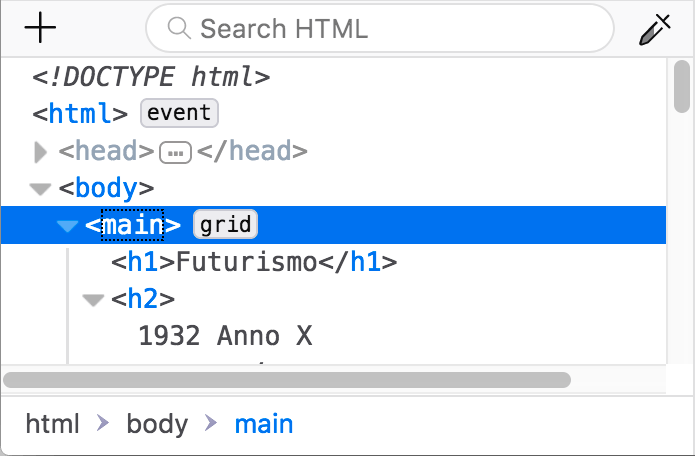
In the CSS pane's Rules view, any instance of a display: grid declaration gets a grid icon included within it: .
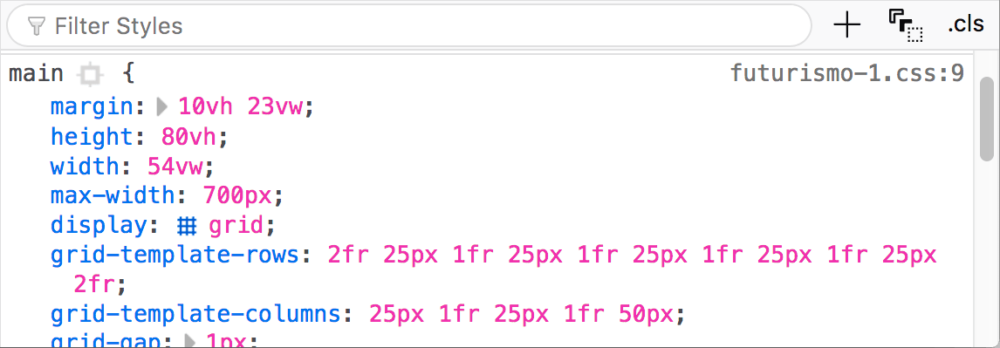
Clicking the icon toggles the display of a grid overlay on the page, which appears over the element, laid out like a grid to show the position of its grid lines and tracks:
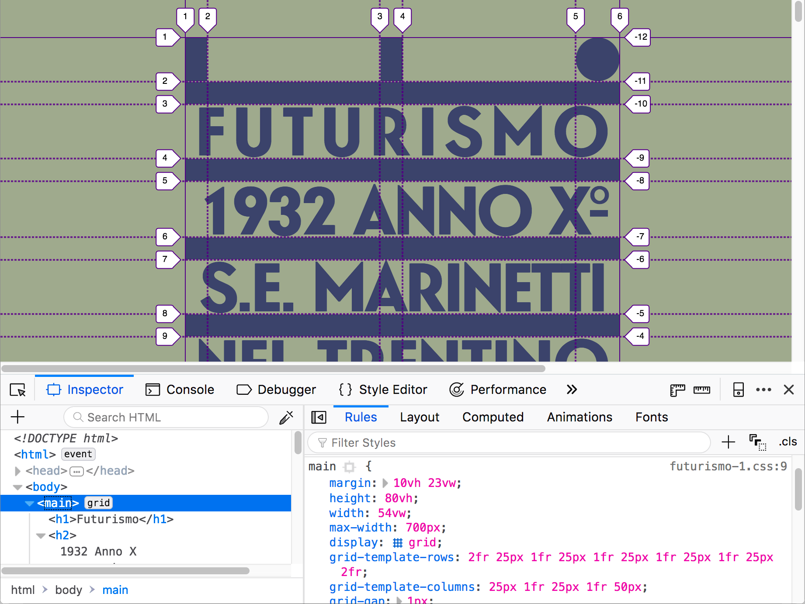
The overlay is still shown when you select other elements, so you can edit related CSS properties and see how the grid is affected.
When grids are included on a page, the CSS pane's Layout view includes a "Grid" section containing a number of options for viewing those Grids. You can find out more about those in the section below.
Note: The Layout view can be found underneath the Layout tab on the right-hand pane of the Page Inspector. The above and below screenshots should give you further hints on how to get to this.
The Grid section of the Layout view looks like this:
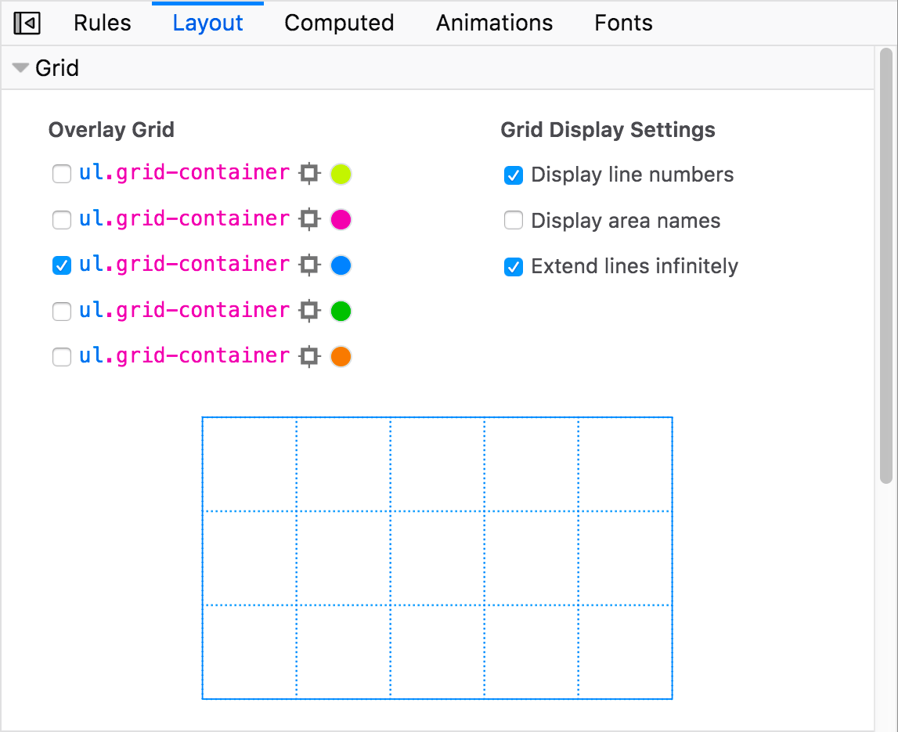
You'll see a number of options contained within:
display: grid set on it; when toggling this option on, the grid lines extend to the edge of the viewport along each axis.Note: Your grid preferences such as overlay color and display settings choices are persisted across page loads for each separate page.
Let's examine these features in more detail.
Each grid present on a page has an entry in the "Overlay grid" section:
Each entry consists of (from left to right):
When the page contains a grid with a subgrid, the entry for the subgrid is indented under its parent in the Overlay grid section. When you select the checkbox for the subgrid, the lines for the parent grid are displayed also displayed; if the checkbox for the parent grid is unselected, then its lines are translucent.
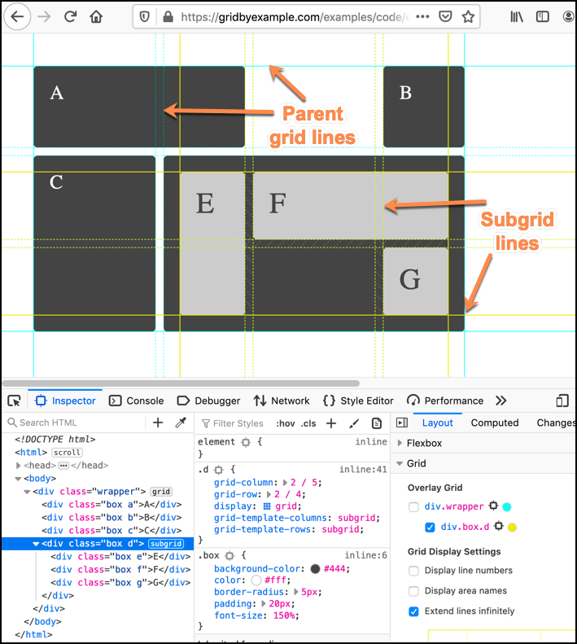
By default, the line numbers are displayed on the grid overlay.
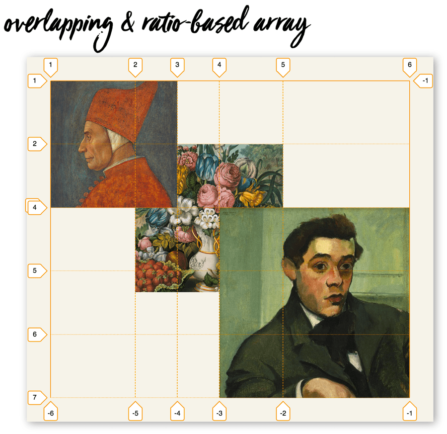
Unchecking the "Display line numbers" box turns them off.
In a grid with named areas, the area names are shown on the grid overlay by default.
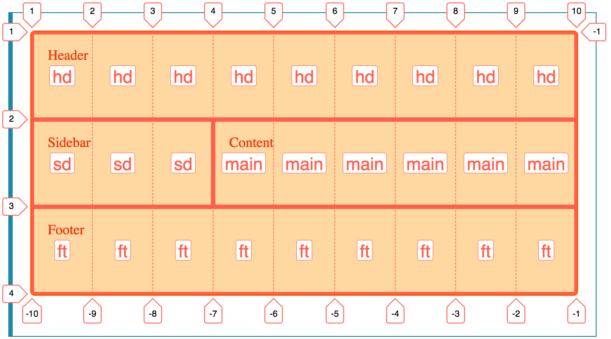
Unchecking the "Display area names" box turns them off.
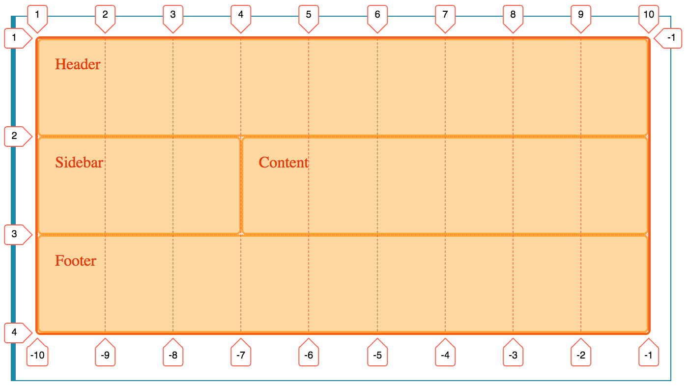
By default, the grid lines/tracks are only shown inside the element with display: grid set on it.
When you check the "Extend lines infinitely" option, the grid lines extend to the edge of the viewport along each axis.
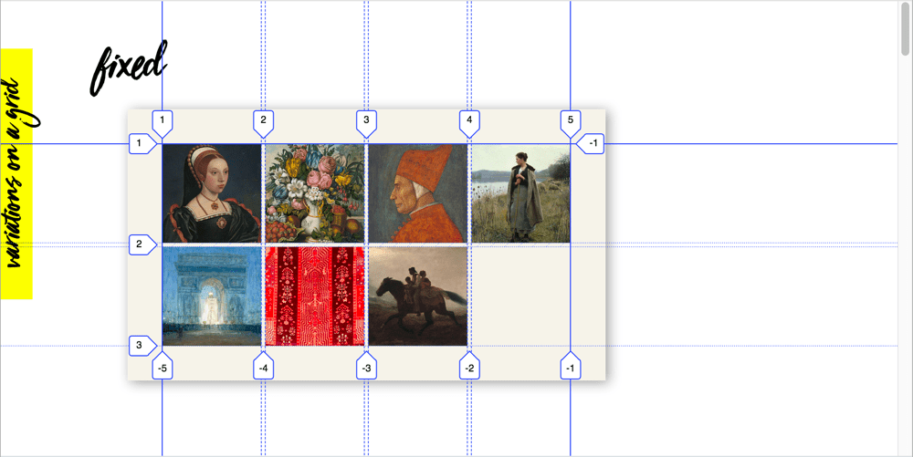
Shows a small version of the currently overlaid grid, which is in proportion to the real thing.
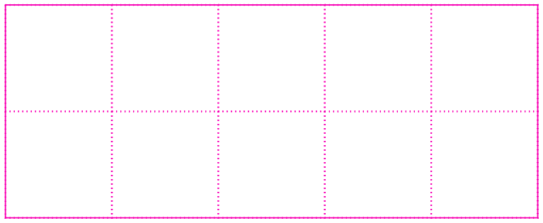
Hovering over the different areas of the mini grid causes the equivalent area on the grid overlay to also highlight, along with a tooltip containing useful information such as the dimensions of that area, its row and column numbers, etc.
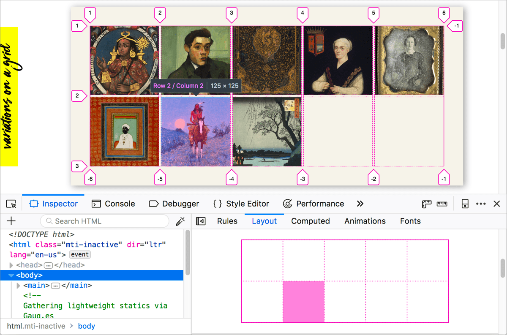